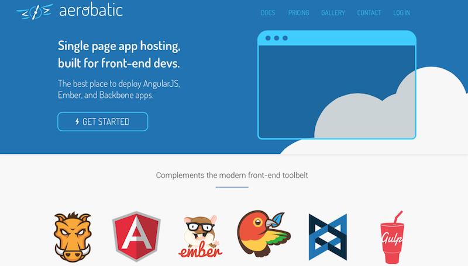
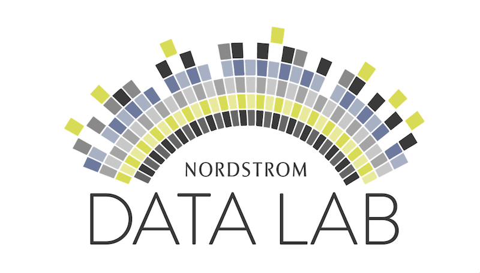

An entrepreneurial data-driven technologist and marketer in Seattle. Want to know more about me?
READ MOREA data-driven technology leader, I've spent 15 years building and optimizing customer experiences. I've started companies, I've helped grow startups, and I've held leadership positions within large enterprises.
Creating value is what excites me the most. I thrive in uncertain environments - the strategy isn't quite baked, the team hasn't yet been hired, the job descriptions haven't been written, the products haven't been completely conceived, the customers haven't yet been won, the marketing plan is but a few slides, and while there's abundant optimism, the outcome is anything but assured. That's fun!
I've led teams that build data products such as product recommendation and segmentation engines that have resulted in incremental revenue and patented IP. I've also sold and delivered lots of analytics projects for major companies.
Together with this guy, we co-founded an awesome cloud-based app delivery platform called Aerobatic. If you're a web developer, you should try it now...seriously! Previously, I also co-founded a social network called Härnu. In high school, I once had an idea for a chlorine based hairspray, but my physics teacher told me that was a stupid idea. He was right.
Email, display, social, re-targeting, digital signage, digital coupons - Working with some amazing people, I've built and monetized ad networks, optimized their performance, and helped retailers and brands acquire, activate, and retain high-value customers.
Away from work, there's nothing I love more than exploring the Northwest with my family, whether we're skiing, hiking, fishing, mountain biking, camping, or on some other adventure. We're lucky to call this amazing part of the world, home.
Aerobatic is a cloud-based app delivery and optimization platform for modern web apps.
Lead a team of data scientists and developers that builds Nordstrom's personalization capabilities, focusing on product recommendations and content targeting.
A side-benefit was being at the forefront of the company's transition to cloud-based computing and the adoption of open-source software. Named inventor on patent application concerning product recommendations.
Also worked closely with Marketing to increase performance across email and various display channels such as Facebook custom audience campaigns.
Härnu is a global discussion application. With a community in more than 100 countries, people can discuss anything with anyone. Named one of The 20 Most Inspiring Companies of 2012 by Business Insider.
As founder, conceived of the opportunity to connect people from around the world in their own language, and subsequently bootstrapped a company around that core idea. Primarily focused on user growth, marketing, and business development, and also handled other aspects of the business such as legal, finance, and collaborated on product management.
DS-IQ's closed-loop technology solution powers retail digital marketing programs such as in-store TV networks, online ads, and digital coupons delivered via web, mobile, and email.
Drove revenue on the networks we operated, working with major CPG brands & media agencies to plan & optimize their ad buys.
Promoted to lead the company's Business Development efforts to create, monetize, and operate behaviorally-targeted digital advertising programs & networks on behalf of global retailers.
Worked with MicroStrategy customers in the West region to improve their business through analytical insights using MicroStrategy's Business Intelligence platform.
Grew the Pacific NW from minimal revenue to the top performing services business unit within 24 months. Promoted to lead the West region consulting, education, and premium support lines of business, and was the largest revenue producing region for the company.
Lots of retail sales analysis and insights for the management team.
I worked mainly as a software engineer building complex systems like a currency exchange system for a major Swedish bank, a billing system for a Swedish telecom operator, and then lots of web development both in Sweden and the U.S.
Latterly, managed teams of consultants and sold consulting engagements, working with clients on the West Coast of the U.S.
Some of the recent things I've enjoyed working on and am most proud of.


Feel free to get in touch with me. I usually respond to emails fairly quickly, unless you're a bot or trying to sell me something. I respond fastest to offers of helping Nigerian royalty move millions of dollars out of the country for a small fee :-)
Seattle, WA, 98119
Email: jason@aerobatic.com